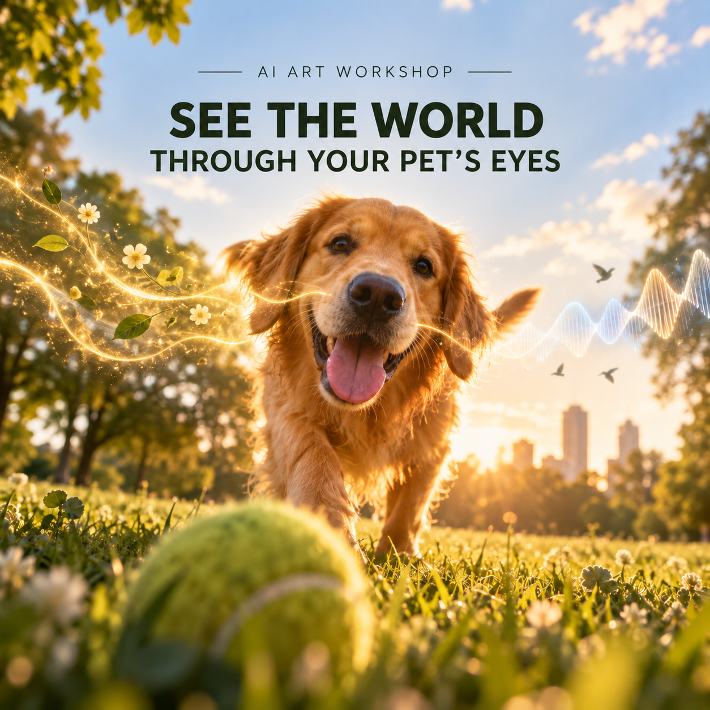

AIC Gathering 06 · Menlo Park
See the World Through Your Pet’s Eyes
A beginner-friendly AI art workshop about animal perception, imagination, and creating an explorable 3D world together.
Hosted by Aesthetic Intelligence Circle (AIC)

- When
6:30–8:30 PM PDT- Where
- Gallery House
826 Santa Cruz Ave
Menlo Park, CA 94025 - Tickets
- $15 USD
Register through Luma
Check the registration page for current availability and any updates.
The experience
One place. Another point of view.
A familiar room or a walk outdoors can feel very different to a dog, a cat, or another animal. We’ll use that shift in perspective as the starting point for a creative evening with AI.
Artist and former Stanford professor Peter J. Koltai will explore perception, space, and movement. An AI researcher will introduce world models and help groups turn their ideas into explorable worlds.
- Notice. Explore how an animal might sense its surroundings.
- Imagine. Work in a small group to describe a world from that perspective.
- Create. Use AI to build and refine an explorable 3D world.
- Share. Join a World Tour of the different realities created in the room.
Before you come
A few practical questions
Do I need experience with AI, art, or coding?
No. This workshop welcomes beginners as well as artists, designers, researchers, and anyone curious about AI and creativity. You’ll work together in small groups.
Do I need to own a pet?
No. You can explore an animal’s perspective whether or not you have a pet.
What should I bring?
A phone is enough. A laptop is optional and can make it easier to create and explore with your group. Light snacks and non-alcoholic drinks will be provided.
Where can I park?
The venue is Gallery House at 826 Santa Cruz Ave in Menlo Park. Free parking is available behind the gallery.
How do I join?
Tickets are $15 USD. Register on Luma for availability and the latest event details.